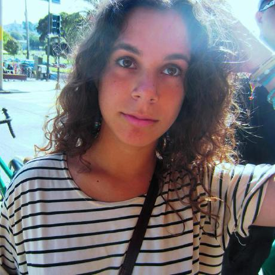
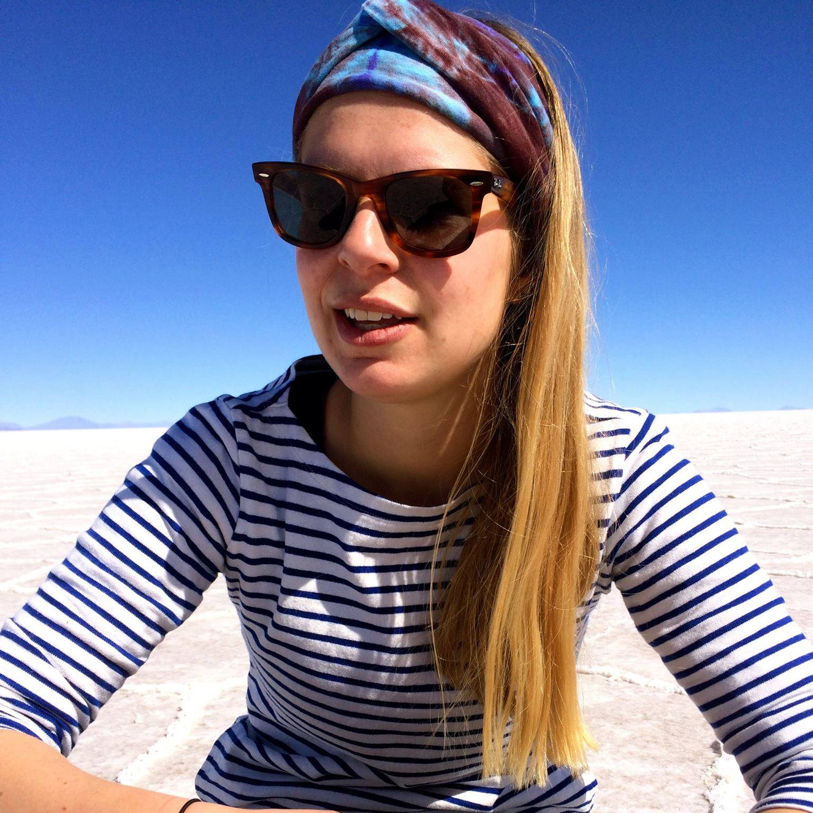

Contact

I've recently got into beekeeping and became aware of how much our actions impact bees' health, which made me want to start this project!
Joana Esgalhado, Co-Founder of the Bee Projectjoana@beeproject.org.uk

I love honey and I have always been passionate about the environment and the idea of making cities greener!
Madeleine Vironda, Co-Founder of the Bee Projectmadeleine@beeproject.org.uk